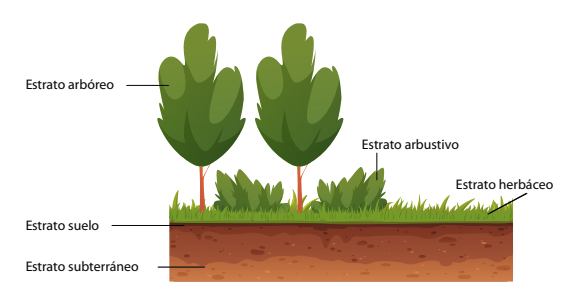

3. Cualidades emergentes de comunidades biologicas
A los grupos de poblaciones de diferentes especies que interactúan en un mismo espacio y tiempo se les conoce como comunidades
Las comunidades tienen una estructura y función de acuerdo con las interacciones de los diferentes tipos de organismos que la conforman y dan las bases para la regulación ecológica
Algunas cualidades emergentes propias de las comunidades biológicas son:
| Riqueza de especies | Número de especies de una comunidad |
|---|---|
| Dominancia | Especie con mayor número de individuos |
| Especies clave | Son las que aunque no sean dominantes, son esenciales para el funcionamiento del ecosistema. |
| Diversidad | Variedad de especies presentes en una comunidad. |
| Estructura trófica | Conjunto de las relaciones alimenticias entre las diferentes especies. |
| Interacciones | Relaciones que se dan entre los organismos de una comunidad. |
| Abundancia | Número de individuos de cualquier especie presentes en una comunidad. |
| Estratificación | Corresponde a las disposiciones de las especies tanto de forma horizontal como vertical. |
Copia el siguiente diagrama de estratos en tu cuaderno
